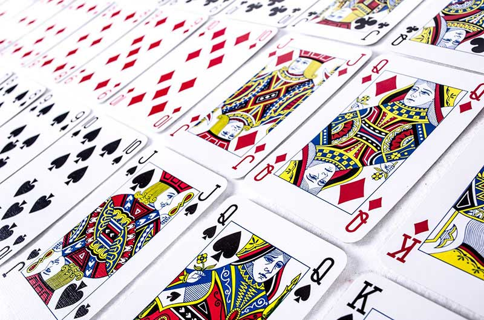

Carta Maior
Vence quem ficar com todas as cartas

Implemente um jogo de Carta Maior (simplificado) entre dois jogadores. O jogo funciona da seguinte maneira: são distribuídas 5 cartas aleatórias para cada jogador. A cada rodada, os dois jogadores apresentam uma carta na mesa, sendo que o jogador que apresentou a carta de maior valor fica com as duas cartas apresentadas. As cartas são todas diferentes para não haver a possibilidade de empate. As rodadas ocorrem sucessivamente até a definição do vencedor, que ocorre quando um jogador detém todas as cartas do jogo, ou seja, 10 cartas.
Exigências
- As cartas são representadas por números de 1 a 13, devendo haver um vetor chamado baralho para guardar todas estas cartas.
- Também é preciso haver dois vetores numéricos para guardar os valores representativos das cartas dos dois jogadores.
- A distribuição das cartas aos jogadores deve ocorrer por meio do embaralhamento do vetor baralho e então atribuída sequencialmente a fim de evitar que um mesmo valor seja atribuído a ambos jogadores.
- As cartas devem ser apresentadas na página HTML a cada clique no botão Jogar. As cartas precisam ser retiradas do início dos vetores dos jogadores e inseridas no final do vetor do jogador vencedor da rodada.
- A pontuação de cada jogador também precisa ser apresentada na página, a qual basicamente corresponde ao tamanho de cada vetor.
- Finalmente, quando algum jogador totalizar 10 cartas no vetor, informar em um alert qual jogador venceu o jogo.

0

0